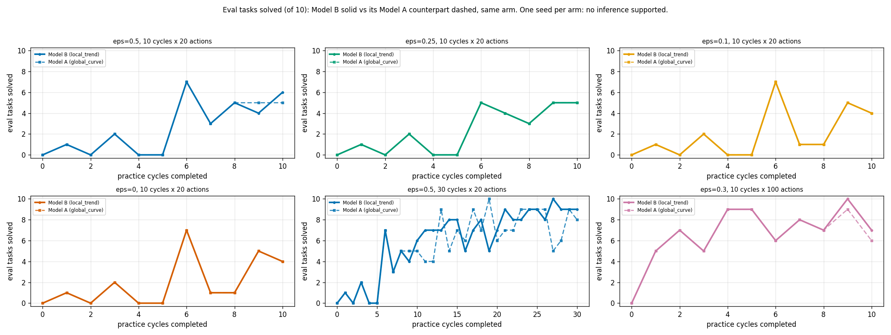

← Experiment log (committed copy). Committed snapshot of a live sub-page, taken 2026-09-27 10:30; files that were not committed are marked “not committed”.
Code d7b7ba30 (PR #368 on #367), kindergarden 6a42988, kinder-baselines 427ad6c. Model B (local_trend), learning-rate decay 0.9 (the notebook's rho), grid engine, lambda=0, evidence non_epsilon, seed 0 only (n=1 per arm): no inference is supported; these are single trajectories. Colour encodes epsilon (not the project's arm-role colour, since every arm has the same mechanism); linestyle encodes budget: solid 10 cycles x 20 actions, dashed 30 cycles x 20, dotted 10 cycles x 100. With n=1 there are no faint per-seed traces to draw: each line is the seed.
Before the first practice success the toss classifier is one-class, every draw takes the uninformative branch, and the epsilon coin is never flipped.
eval_curves.png]
competence_and_informed_rate.png]
learning_rate.png]
| arm | status | eval per checkpoint (of 10) | final | eval @10 cycles | AUC ckpt 0-10 | AUC all | first practice success cycle | informed | epsilon_random | uninformative | median landing err, final ckpt (m) |
|---|---|---|---|---|---|---|---|---|---|---|---|
| lt-eps0.5-c10 | done | 0 1 0 2 0 0 7 3 5 4 6 | 6/10 | 6/10 | 28/110 | 28/110 | 4 | 17/24 | 4/21 | 2/47 | 0.096 |
| lt-eps0.25-c10 | done | 0 1 0 2 0 0 5 4 3 5 5 | 5/10 | 5/10 | 25/110 | 25/110 | 4 | 13/35 | 0/7 | 2/47 | 0.061 |
| lt-eps0.1-c10 | done | 0 1 0 2 0 0 7 1 1 5 4 | 4/10 | 4/10 | 21/110 | 21/110 | 4 | 18/40 | 0/3 | 2/47 | -0.253 |
| lt-eps0.0-c10 | done | 0 1 0 2 0 0 7 1 1 5 4 | 4/10 | 4/10 | 21/110 | 21/110 | 4 | 20/43 | 0/0 | 2/47 | -0.254 |
| lt-eps0.5-c30 | done | 0 1 0 2 0 0 7 3 5 4 6 7 7 7 8 8 5 7 8 5 7 9 8 8 9 9 8 10 9 9 9 | 9/10 | 6/10 | 28/110 | 185/310 | 4 | 89/109 | 8/101 | 2/47 | 0.076 |
| lt-eps0.3-c10-s100 | done | 0 5 7 5 9 9 6 8 7 10 7 | 7/10 | 7/10 | 73/110 | 73/110 | 0 | 189/280 | 6/103 | 3/47 | -0.012 |
{
"lt-eps0.5": {
"evals": true,
"sampler_draws": [
true,
92,
92
],
"episode_traces": [
true,
384,
384
],
"evals_prefix_equal": [
true,
11
],
"first_diff": null
}
}
practice_by_consultation.png]
landing_error.png]